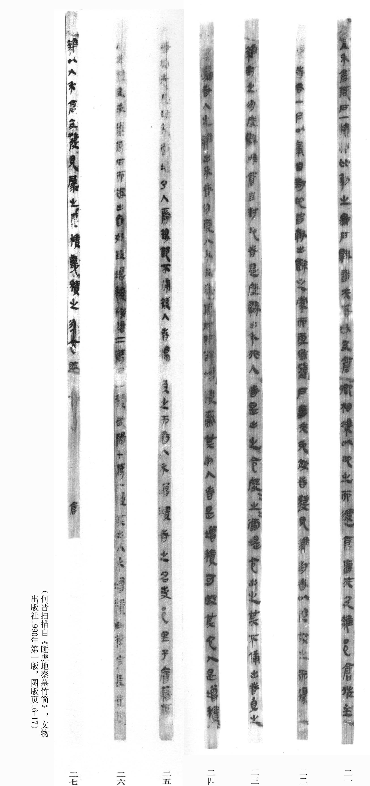

睡義地秦墓竹简
仓律（节选）

《秦律十八种》
名 称
内 容
（1）《田律》
农田耕作、山林保护
（2）《厩苑律》
牛马饲养
（3）《仓律》
关于粮草方面的法律，国家粮食的贮存保管和发放
（4）《金布律》
关于货币、财务方面的法律
（5）《关市》
关于关、市职务方面的法律
（6）《工律》
关于官营手工业的法律
（7）《工人程》
关于官营手工业生产定额的法律规定
（8）《均工》
关于调度手工业劳动者的法律规定
（9）《徭律》
关于徭役的法律
（10）《司空》
关于司空职务的法律。“司空”：掌管工程，由于多用刑徒，后逐渐成为主管刑徒的官名
（11）《军爵律》
关于军功爵的法律规定
（12）《置吏律》
关于任用官吏的法律
（13）《效》
关于核验官府物资财产的法律
（14）《传食律》
关于驿传革给饭食的法律规定
（15）《行书》
关于传送文书的法律规定
（16）《内史杂》
关于掌治京师的内史职务的各种法律规定
（17）《尉杂》
尉，指廷尉，司法官员。尉杂，即关于廷尉职务的各种法律规定
（18）《属邦》
属邦，管理少数民族的机构。
北京大学历史学系·中国古代史教研室·何晋 制作
Copyright
返回课件首页
参加讨论